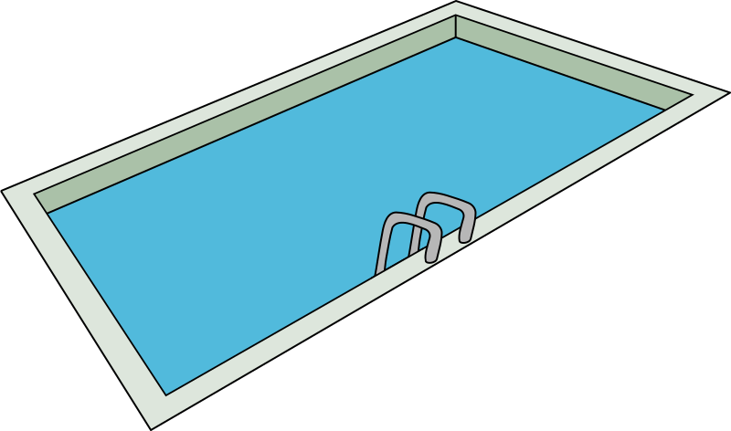

En primer lugar, poneros en pareja antes de empezar.
Después pensad detenidamente en un ejemplo de qué debería hacer el sistema de IoT de las situaciones que se os plantean a continuación.
Podéis hacerlo como mejor os venga. Hay distintas posibilidades:
- Escribirlo en vuestro cuaderno.
- Hacer una presentación electrónica.
- Escribirlo en un documento digital con un procesador de texto.
- Si tenéis en mente algo diferente para dejar constancia de vuestras soluciones, también vale.
Piscina
Si tienes que llevar el mantenimiento de la piscina de tu casa.

Limpieza
Si tienes que mantener tu casa lo más limpia posible.
Accesos
Si quieres controlar quién puede entrar en tu casa y cuándo.

Calor y frío
Si quieres mantener una temperatura agradable en tu casa durante todo el año al mínimo coste posible de la forma más sostenible.

Ocio
Si quieres utilizar opciones de entretenimiento cuando no puedes salir de casa.
Salud
Si quieres asegurar que vives en buenas condiciones de salubridad y además verificar qué tal te encuentras en cada momento.

Alimentación
Si quieres tener tus alimentos controlados.

Jardinería
Si quieres cuidar de tus plantas.
- Definición
Adjetivo que se refiere al uso de los recursos disponibles de manera equilibrada, por debajo de su capacidad de reposición, de forma que permita que las generaciones futuras puedan seguir haciendo uso de los mismos para, de igual manera, cubrir sus necesidades.
- Ejemplo
El uso sostenible de las fuentes de energía permite que éstas no se agoten en un futuro.